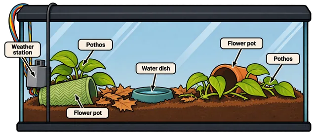

Meiofauna
Q: What are they doing down there?
Studying the behavior, diversity, and ecology of microscopic marine animals.
NAMEWill Ballentine
SUBJECTLife sciences
Postdoctoral Scholar, School of Oceanography, University of Washington (Chan Lab)
I am a scientist and a tinkerer. Follow along for updates on my research and side projects.
I study how organismal form sets ecological function in animals that live in viscous, structured fluid environments: meiofauna in sediments, zooplankton in the water column. I love building new tech that enables me to explore novel questions in organismal research.

Q: What are they doing down there?
Studying the behavior, diversity, and ecology of microscopic marine animals.
Q: What's with all the spines?
Measuring how spines and body shape change the way tiny drifting animals swim and feed.
Q: What if the right tool doesn't exist?
Building see-through sand and syrup-filled tanks to watch and measure animals too small to study any other way.

Follow along in the lives of my two pet toads
Ballentine et al. 2026
Ballentine et al. 2026
Ballentine & Dorgan 2024